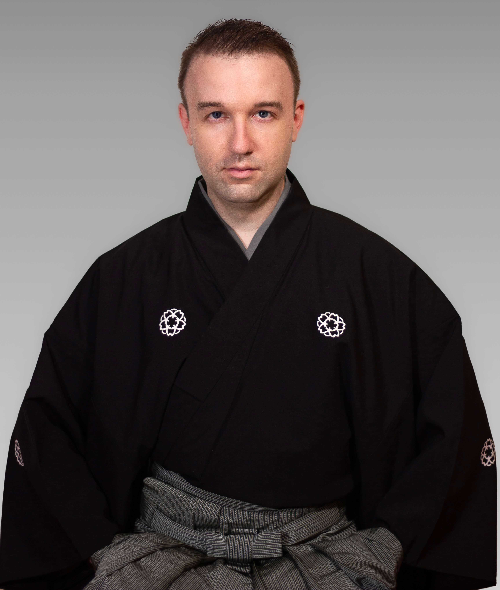
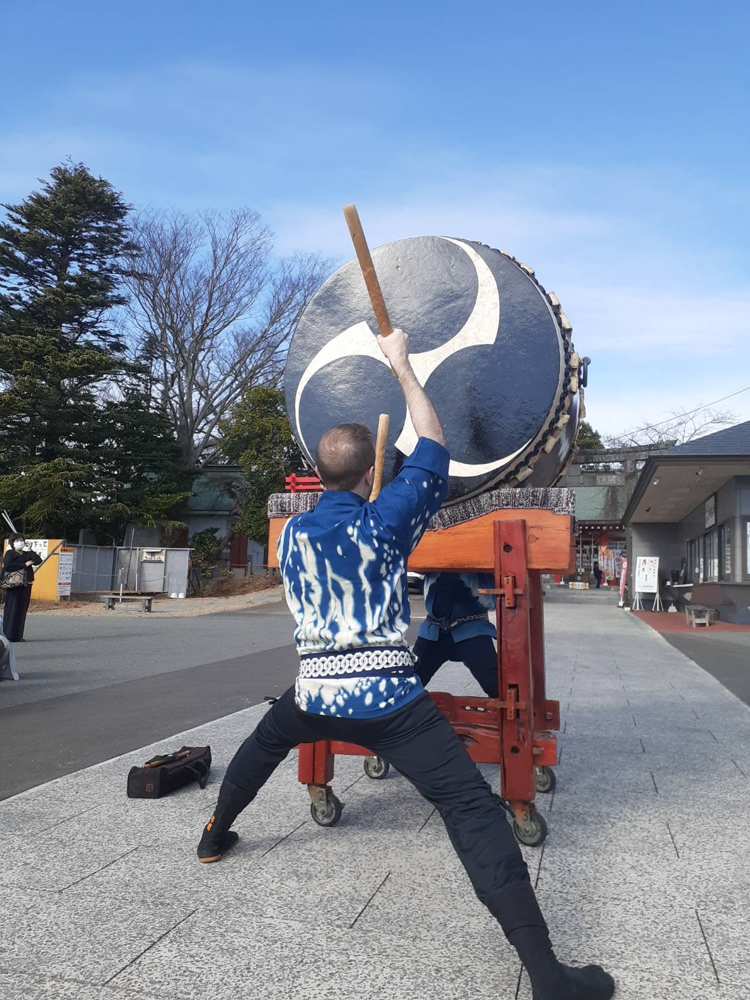
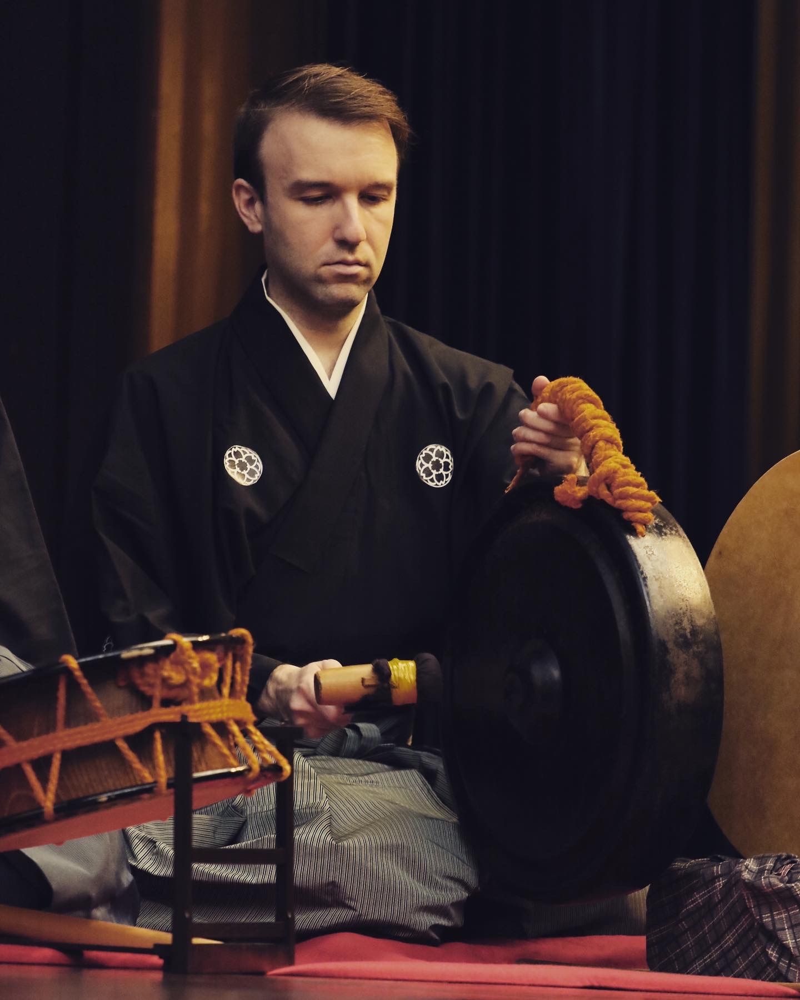

Profile

Mukon Mochizuki・J.D. Andrade
A native of Illinois, J.D. began his musical journey in classical violin before discovering wadaiko at Brown University. Upon moving to Japan in 2014, he began his deep dive into the traditional performing arts, eventually studying matsuri-bayashi under Kyosuke Suzuki and kabuki-bayashi under Saburo Mochizuki.
In 2019, J.D. became the second non-Japanese national to be awarded a stage name, or natori, in kabuki-bayashi: Mukon Mochizuki (望月武懇).
Read Full BioWhat is taiko and ohayashi?
Wadaiko, commonly known around the world simply as taiko, refers to Japanese drumming, an art form consisting of drums, percussion, and movement. When most people think of wadaiko, they envision three main types of drums, nagadō daiko, okedō daiko, and shime daiko, each of which comes in a variety of sizes.

Ohayashi generally refers to musical accompaniment in Japanese performing arts associated with festival traditions, matsuri bayashi, and classical or traditional arts, hōgaku bayashi. These instruments, mainly specialized drums, percussion, and various flutes support the main performers of different genres including, but not limited to, the following:
- Noh Theatre: actors wearing intricate masks perform mai in very reserved, precise movements.
- Nagauta: shamisen players and singers tell stories rooted in Japanese mythology and history.
- Nihon Buyo: dancers dressed in simple kimonos or elaborate costumes perform against a backdrop of melodic instruments and ohayashi.
- Kabuki Theatre: a “new” art form that fuses music, acting, and dance from all of the above genres.

There are a plethora of instruments that are a part of hōgaku bayashi including the following:
“The main three”
 kotsuzumi
小鼓
kotsuzumi
小鼓
 ōtsuzumi
大鼓
ōtsuzumi
大鼓
 taiko
太鼓
taiko
太鼓
“The flutes”
 noh-kan
能管
noh-kan
能管
陰囃子 (Kagebayashi)
 ōdaiko
大太鼓
ōdaiko
大太鼓

gong 当たり鉦